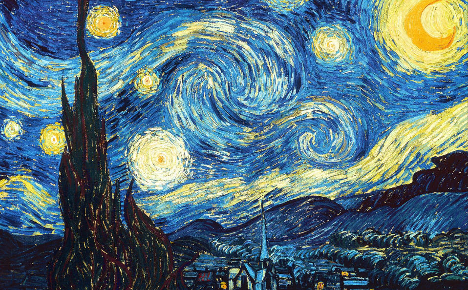

The Starry Night is one of Vincent van Gogh's greatest masterpieces. Painted in 1889, it portrays a quiet village beneath a dramatic sky filled with swirling stars and a glowing moon. The expressive brushstrokes and vibrant colors make it one of the most recognizable paintings in history.